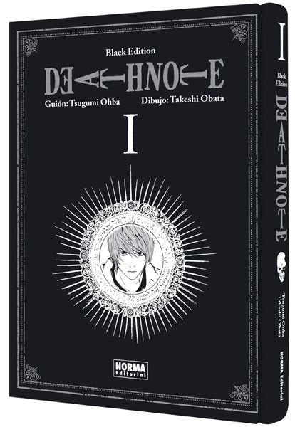
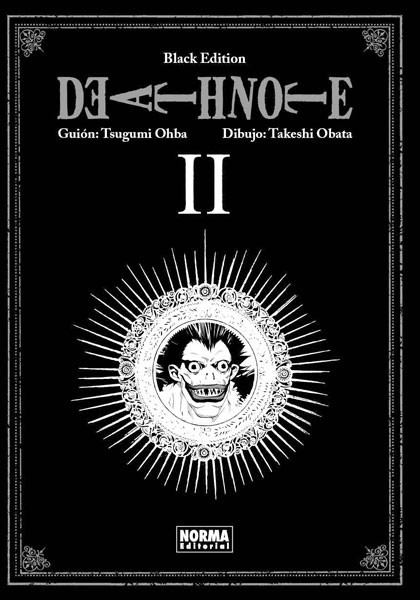
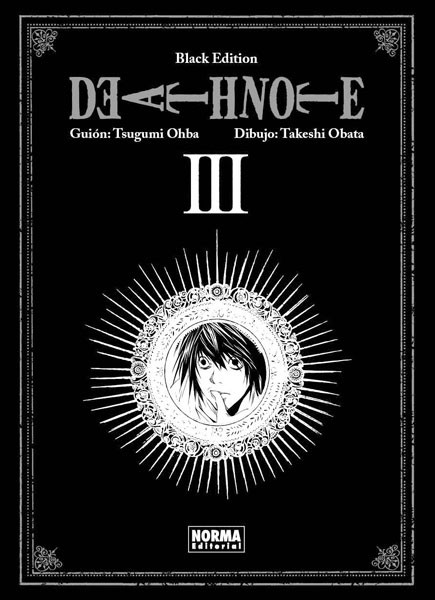
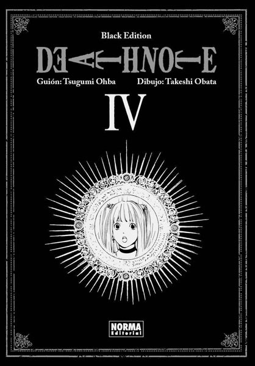
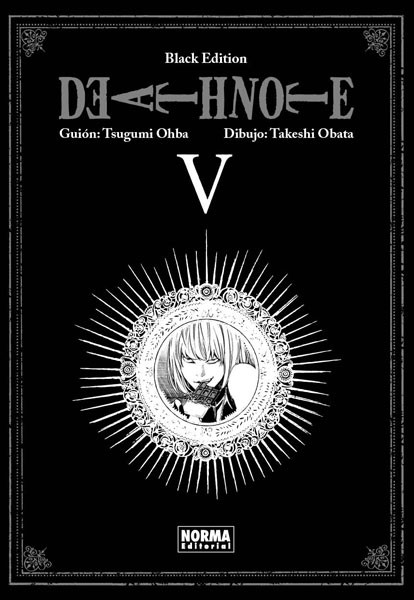
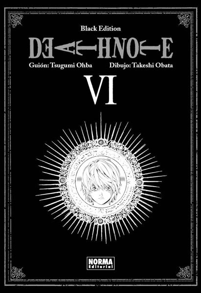
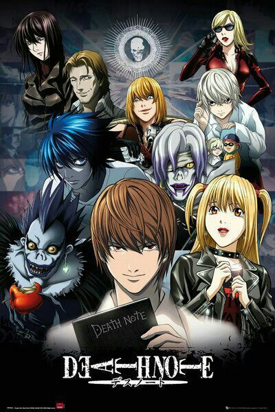

La historia gira en torno a Light Yagami, un brillante estudiante que encuentra una Death Note, un cuaderno sobrenatural que permite matar a cualquier persona cuyo nombre se escriba en él, lo que lo lleva a convertirse en el asesino conocido como Kira con el objetivo de crear un mundo sin crimen.El conflicto principal surge cuando el detective L, considerado el mejor del mundo, se enfrenta a Kira para detenerlo.

El protagonista, tras encontrar un objeto mágico de inmenso poder, lo utiliza no para hacer el bien… sino para convertirse en el gobernante supremo del mundo.

Light Yagami se ha topado con la horma de su zapato mientras implementa su plan para someter a toda la humanidad. L no le dará cuartel y está dispuesto a hacer lo que sea necesario y a no detenerse ante nada con tal de apresar al asesino Kira.

El cerco de L se ha cerrado tanto que Light ha tenido que buscar una salida a su papel de Kira. Al renunciar a Ryuk y al Cuaderno de Muerte olvida todo lo que ha pasado, pero L sigue sospechando de él… ¡y de repente el Cuaderno de Muerte vuelve a la acción! ¿Quién lo controla ahora?

La Yotsuba, una empresa que se ha hecho con el cuaderno asesino, lo está usando para sus propios fines, pero lo que no saben es que Light lo tenía todo previsto y, en realidad, no hacen más que seguir su plan… cuyo objetivo final es acabar con L.

Light Yagami sigue desarrollando su plan para dominar el mundo desde su postura como miembro de la policía y como Kira. Pero Near, el heredero de L, está decidido a atrapar al asesino de su colega y cada vez cierra más el cerco en torno al que aspira ser el Dios del Nuevo Mundo.

Emocionante desenlace de la historia de Light Yagami, el mortal decidido a convertirse en el dios del nuevo mundo gracias a un Cuaderno de Muerte. Near está haciendo todo lo posible por acorralarle, ¿pero tendrá lo necesario para apresar a Kira?

Es una serie de anime producida por el estudio Madhouse, basada en el manga homónimo creado por Tsugumi Ōba y ilustrado por Takeshi Obata.